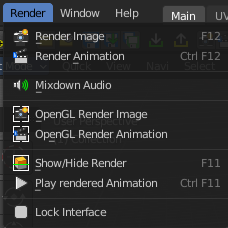
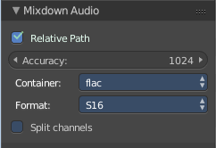
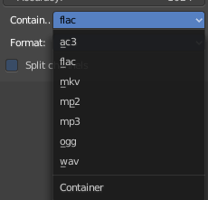

Render Menu

This menu contains functionality around rendering.
Most of the render settings can be found in the Properties editor in the Render tab. And here you can also choose the render engine.
Rendered images can be saved in the Image menu like any other image.
| Entry | What it does |
|---|---|
| Render Image | Renders the current scene as an image by using the current chosen renderer. |
| Render Animation | Renders the current scene as an animation by using the current chosen renderer. |
Mixdown Audio
Mixdown and export the scene's audio to an audio file. You will open an export dialog when you click at Mixdown Audio. Further Audio settings can be found in the Properties editor.
Options

The options can be found down left in the Save dialog.
| Entry | What it does |
|---|---|
| Relative Path | Select the file relative to the blend-file. |
| Accuracy | Sample accuracy, important for animation data (the lower the value, the more accurate). |
Containers

Choose between different audio export formats.
| Entry | What it does |
|---|---|
| Format | Some Audio Containers also have option to choose a codec. For more information see here. |
| Split Channels | Each audio channel will be rendered into a separate file. |
| Entry | What it does |
|---|---|
| OpenGL Render Image | Renders an Image, using the Viewport OpenGL renderer. |
| OpenGL Render Animation | Renders an animation, using the Viewport OpenGL renderer. |
| Show / Hide Render | Toggles the display of the render view. |
| Play rendered Animation | Plays back the rendered animation sequence. |
| Lock Interface | Lock the interface while rendering to free the memory for the UI to the renderer. |